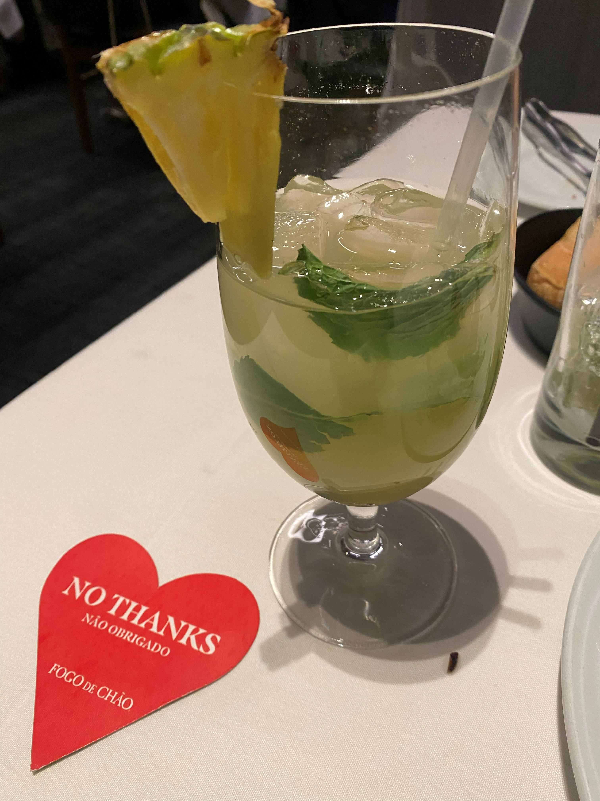

Image 4: JPG

Description: A photo of my favorite cocktail at a restaurant.
Image file type: Joint Photographic Experts Group (JPG)
Why did you chose the image: This picture brings back a lot of memories. It was my first date with my girlfriend and we had a couple of drinks and food was amazing.
Source: Original work by me.